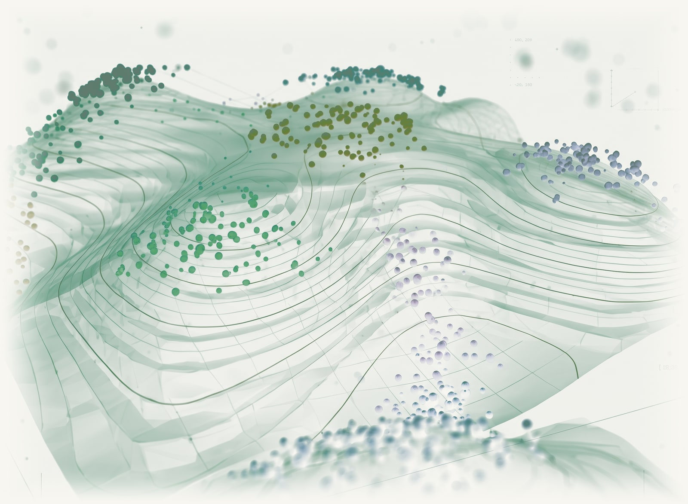

Single-cell & spatial
Cell identity, developmental trajectories and tissue organization studied through single-cell and spatial transcriptomics.
Spatial workflows · repositoryBioinformagician
Single Cell y Spatial
I work on gene regulation and alternative polyadenylation (APA) through single-cell and spatial analysis. My software work spans Nextflow workflows, HPC/GPU computing and graph neural networks for RNA regulation.
Lead Bioinformatician at ZS
Departamento de Computación - Universidad de Buenos Aires

01 / Research
My work connects gene regulation with cellular and tissue-level analysis, supported by reproducible software and scalable computing.
Cell identity, developmental trajectories and tissue organization studied through single-cell and spatial transcriptomics.
Spatial workflows · repositoryRNA processing and alternative polyadenylation as mechanisms of post-transcriptional gene regulation, with a focus on poly(A) site usage and 3′UTR diversity.
scPolASeq · repositoryDevelopment of portable analysis workflows with Nextflow, containers and HPC/GPU infrastructure for computational biology.
SVantigen · collaborative repositoryDeveloping heterogeneous graph neural networks in UTRNNet to learn RNA regulatory representations, with masked feature reconstruction, held-out-gene evaluation and exploratory perturbation benchmarks.
Explore UTRNNet & public reports02 / Software & Projects
Public software organized around single-cell APA workflows, graph deep learning and collaborative research. Each project links to its repository and, where available, its methods, evaluation reports or associated papers.
Featured / Gene regulation & APA
A modular Nextflow DSL2 workflow for single-cell APA discovery and quantification, integrating STARsolo, Sierra and optional SCAPTURE. Recent public work adds a Sierra CountPeaks module following nf-core conventions, staged SCAPTURE processes and nf-test suites.
View repositoryFrom evidence-aware regulatory graphs to neural representations. UTRNNet is an active research prototype with public architecture and exploratory benchmark reports.
Research prototype · deep learning
Learns representations of 3′UTR regulatory graphs with heterogeneous graph neural networks in PyTorch Geometric. Extends scPolASeq-UTRNet with masked feature reconstruction and evaluation on held-out genes.
Complementary tools for downstream analysis, visualization and regulatory graph construction.
Exploratory regulatory graphs
Builds population-specific 3′UTR regulatory graphs from scPolASeq outputs, connecting poly(A) site usage with transcript annotation and candidate RBP/miRNA interactions. Versioned graph and regulatory-signature formats support reuse by UTRNNet.
Personal project
Python package for downstream analysis of scPolASeq outputs, integrating cell annotation, poly(A) site usage, enrichment analysis and reproducible notebooks.
Personal project
Python toolkit for visualizing poly(A) site usage, genomic coverage, gene tracks and metagene profiles.
Shared software and analysis code, with links to original repositories and associated papers.
Collaboration · Novo Nordisk & ZS
Single-cell and spatial omics workflows developed collaboratively with Novo Nordisk and ZS. Original repository maintained by NovoNordisk-OpenSource; accompanying paper published in 2026.
Research · García Solá et al.
Data and analysis code accompanying the 2021 post-natal mouse mammary gland atlas, with Micaela Stedile, Inés Beckerman and Edith C. Kordon.
Community collaboration
A collaborative workflow exploring structural variants and candidate neoantigens. Developed with the collaborativebioinformatics team; neoantigen prediction remains future work.
03 / Publications
Selected papers on single-cell and spatial analysis, gene regulation and cancer biology.
Computational and Structural Biotechnology Journal · 35(1), 0164
Breast Cancer Research · 24, 30
Journal of Mammary Gland Biology and Neoplasia · 26, 29–42
Frontiers in Oncology · 11, 687629
Nucleic Acids Research · 48(12), 6824–6838
04 / Teaching
University teaching and practical training in bioinformatics, sequencing analysis and programming for biological research.
Open educational resources in Spanish for students and professionals exploring bioinformatics.
Explore course materialsPython notebooks using standard datasets, with examples designed to run in Google Colab.
Browse notebooksTeaching in the Departamento de Computación (DC), Facultad de Ciencias Exactas y Naturales, Universidad de Buenos Aires.
Instructor with the NGS LATAM team in courses organized by Wellcome Genome Campus Advanced Courses.
Course organization and teaching of R for biological sciences.
Buenos Aires, Argentina
05 / About & Contact
I am a bioinformatician with a background in molecular biology and a PhD from Universidad de Buenos Aires. My work combines biological research, computational analysis and scientific software development.
My research has addressed mammary gland biology, viral oncogenesis and RNA regulation. Today, my interests center on gene regulation, including alternative polyadenylation, and its study through single-cell and spatial transcriptomics.
I work as Lead Bioinformatician at ZS and teach in the Departamento de Computación (DC), Facultad de Ciencias Exactas y Naturales, Universidad de Buenos Aires. My current software work includes reproducible workflows, HPC/GPU computing and graph neural networks for RNA regulatory representations.